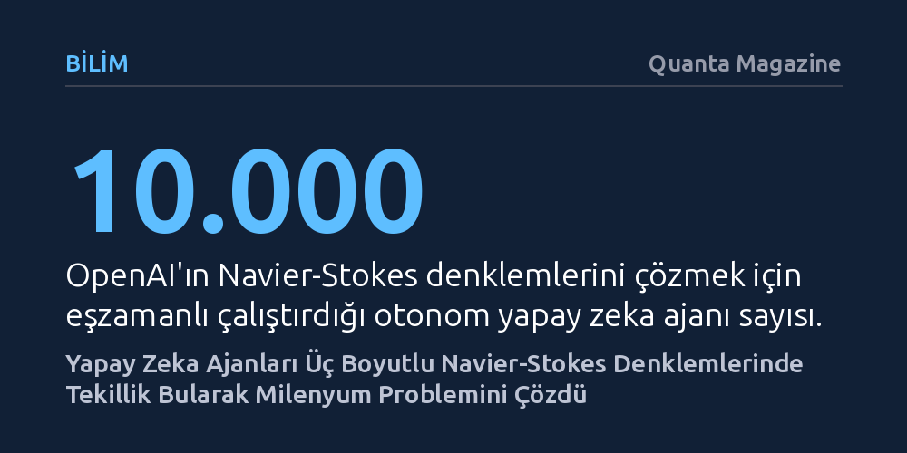

BILIM · Quanta Magazine · 2026-09-09
OpenAI bünyesindeki yapay zeka ajanları, akışkanlar mekaniğinin temelini oluşturan üç boyutlu Navier-Stokes denklemlerinde matematiksel bir tekillik oluşabildiğini Lean ile doğrulayarak ispatladı. Bu sonuç, Clay Matematik Enstitüsü'nün bir milyon dolarlık Milenyum problemlerinden birini tarihte ilk kez yapay zekayla çözüme kavuşturdu.
Yapay zekanın matematikte artık yalnızca bir hesaplama aracı değil, yüzyıllık teorik problemleri sıfırdan ve biçimsel olarak doğrulayarak çözebilen bağımsız bir kuramcıya dönüştüğünü gösteriyor.

OpenAI araştırmacıları, akışkanların hareketini açıklayan üç boyutlu Navier-Stokes diferansiyel denklemlerinde matematiksel bir tekillik oluştuğunu kanıtladıklarını açıkladı. Clay Matematik Enstitüsü tarafından 2000 yılında ilan edilen ve her biri bir milyon dolar ödül taşıyan altı çözülmemiş Milenyum probleminden biri olan bu bilmece, tarihte ilk kez yapay zeka ajanları tarafından çözüme kavuşturulmuş oldu. Çözümün matematiksel doğruluğu, biçimsel ispat dili Lean ile bilgisayar ortamında eksiksiz olarak onaylandı.
Bu netice, teorik matematikte insan kavrayışının sınırlarını zorlayan soyut muhakemelerin artık makineler tarafından da yürütülebileceğini belgeliyor. Yaklaşık on bin otonom yapay zeka ajanının koordineli çalışmasıyla elde edilen bu kanıt bağımsız incelemelerden de geçerse, yapay zekanın bilimsel araştırmadaki rolünü temelden dönüştüren tarihi bir kırılma noktası olarak kayda geçecek.
19. yüzyılın ortalarında Newton’ın ikinci hareket yasası temel alınarak yazılan Navier-Stokes denklemleri, okyanus akıntılarından atmosferik hava hareketlerine kadar akışkan mekaniğinin merkezinde yer alır. Denklemin ayırt edici niteliği, akışkanın iç sürtünmesini yani viskozitesini hesaba katmasıdır. Bal gibi yoğun sıvıların yavaş, suyun ise daha hızlı akmasını belirleyen bu kuvvettir. Sürtünmesiz akışkanları inceleyen daha yalın Euler denklemlerine kıyasla, sisteme sonsuz küçük bir sürtünme eklemek dahi akışkanın davranışını kökten ve öngörülemez biçimde farklılaştırır.
Matematikçilerin uzun süredir yanıt aradığı asıl soru şuydu: Bu denklemlerin çözümleri her zaman pürüzsüz ve düzenli mi kalır, yoksa akışkanın sonsuz küçüklükteki bir parçası sonlu bir sürede sonsuz hıza ulaşarak tekillik mi yaratır? Gerçek dünyada akışkanlar molekül ve atomlardan oluştuğu için sonsuz hız fiziksel olarak mümkün değildir. Ancak kuramsal düzlemde tekilliğin varlığı, Newton mekaniğinin akışkan türbülansında son derece şaşırtıcı ve sezgilere aykırı sonuçlar doğurduğunu gösterir.
Matematik dünyasında uzun süre Navier-Stokes denklemlerinde tekillik oluşamayacağı kanaati hakimdi. Diego Córdoba'nın belirttiği gibi, "On yıl önce hiç kimse Navier-Stokes için bir tekillik olabileceğine inanmıyordu." Bu algı, sürtünmesiz Euler denklemlerinde bilgisayar simülasyonlarıyla tekillik izi sürülmesiyle değişmeye başladı. Ancak asıl teorik sıçrama, İspanyol matematikçiler Diego Córdoba ve Luis Martínez-Zoroa’nın geliştirdiği analitik yöntem sayesinde gerçekleşti. Araştırmacılar, bilgisayar modellemeleri yerine her biri düzenli çözümlerden oluşan sonsuz sayıda katmanı sonsuz bir çağlayan halinde üst üste bindiren analitik bir yaklaşım inşa etti.
Fakat insan zihninin geliştirdiği bu teknikte aşılması gereken kritik bir engel kalmıştı: Sonsuz katman bir araya geldiğinde tekillik ortaya çıkıyor, ancak denklemin pürüzsüz bir zorlama fonksiyonuna sahip olması şartı bozuluyordu. Yapay zeka ajanlarının başardığı kritik hamle tam da bu noktada devreye girdi. OpenAI'ın otonom ajanları, söz konusu sonsuz çağlayanı Milenyum ödülü kriterlerine uygun biçimde hem tekillik üretecek hem de pürüzsüz zorlama fonksiyonunu koruyacak şekilde kurgulamayı başardı. Ardından bir başka model devreye girerek ispatı Lean dilinde kodlayıp mantıksal kusursuzluğunu kanıtladı.
Bu devasa keşif akademik dünyada sakin bir ortamda duyurulmadı; arka planda yoğun bir rekabet ve fikri mülkiyet tartışması patlak verdi. OpenAI’ın duyurusundan yalnızca on iki saat önce, New York Üniversitesi'nden Tristan Buckmaster ve Anthropic'ten Levent Alpöge, yapay zekadan yararlanarak Euler denklemlerindeki tekilliği Lean ile ispatladıklarını duyurmuştu. OpenAI, Euler çözümünü yaklaşık yüz ajanın elli saatlik ortak mesaisiyle çürüttükten sonra asıl büyük hedefe yöneldiğini belirtiyor. Navier-Stokes denklemlerini çözmek için yaklaşık on bin ajan seksen sekiz saat çalıştı, beş milyona yakın mesaj alışverişinde bulundu ve milyonlarca dolarlık işlem gücü harcadı.
Duyurunun hemen ardından iki grup arasında tartışma alevlendi. Buckmaster yayımladığı bildiride, OpenAI araştırmacılarının veya modellerinin, kendilerinin OpenAI sistemleri üzerinden yürüttüğü çalışmalardan haberdar olup bunlardan yararlanmış olabileceğini ima etti. OpenAI ise Euler denklemlerindeki önceliği Buckmaster ve Alpöge ikilisine bırakırken Navier-Stokes zaferinin kendi sistemlerine ait olduğunu savunuyor. Bu çekişme, yapay zekayla üretilen bilimsel keşiflerin önceliği, telifi ve şeffaflığı konusundaki tartışmaların yeni başladığını gösteriyor.